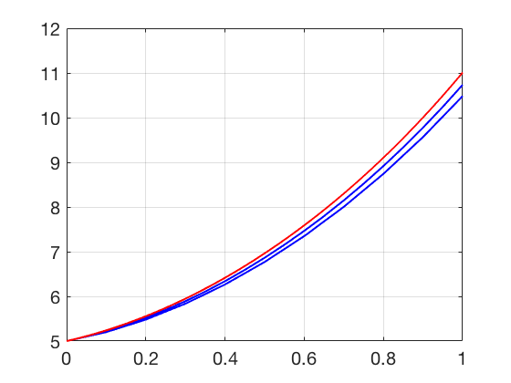

Additional Examples 6.3
1 Show that \(y(t) = e^{-2t}+4e^t\) is a solution of the initial value problem
\[ \left\{
\begin{array}{l}
y''+y'-2y =0\\
y(0)=5\\
y'(0)=2,
\end{array} \right. \]
and convert the differential equation to an equivalent first-order system.
The solution and derivatives are
\begin{eqnarray*}
y(t) &=& e^{-2t}+4e^t\\
y'(t) &=& -2e^{-2t}+4e^t\\
y''(t) &=& 4e^{-2t}+4e^t
\end{eqnarray*}
Thus \(y''+y'-2y = e^{-2t}+4e^t-2e^{-2t}+4e^t -2(4e^{-2t}+4e^t) = 0.\) The initial conditions \(y(0)=5\) and \(y'(0)=2\) are easily checked.
To convert to a first order system, denote \(y_1 = y\) and \(y_2=y'.\) Then the differential equation can be written as the system
\[ \left\{
\begin{array}{l}
y_1' =y_2\\
y_2' = y'' = -y'+2y = -y_2+2y_1\\
y_1(0)=5\\
y_2(0)=2.
\end{array} \right. \]
2 Apply Euler's Method with step sizes \(h=0.1\) and \(h=0.05\) to approximate the solution of the first-order system in Additional Example 1 on the interval \([0, 1]\). Plot both approximate solutions \(y(t)\) along with the exact solution.
Program 6.2 can be adapted to carry out Euler's Method for this equation. The red (top) curve is the exact solution. Below it lies the two approximate solutions, with step sizes
\(h=0.05\) and \(0.1\), respectively.
